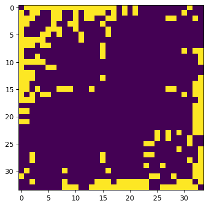

import matplotlib.pyplot as plt
import pandas as pd
import networkx as nx
G = nx.karate_club_graph()
communities = list(nx.community.girvan_newman(G))
# Modularity -> measures the strength of division of a network into modules
modularity_df = pd.DataFrame(
[
[k + 1, nx.community.modularity(G, communities[k])]
for k in range(len(communities))
],
columns=["k", "modularity"],
)
# function to create node colour list
def create_community_node_colors(graph, communities):
number_of_colors = len(communities[0])
colors = ["#D4FCB1", "#CDC5FC", "#FFC2C4", "#F2D140", "#BCC6C8"][:number_of_colors]
node_colors = []
for node in graph:
current_community_index = 0
for community in communities:
if node in community:
node_colors.append(colors[current_community_index])
break
current_community_index += 1
return node_colors
# function to plot graph with node colouring based on communities
def visualize_communities(graph, communities, i):
node_colors = create_community_node_colors(graph, communities)
modularity = round(nx.community.modularity(graph, communities), 6)
title = f"Community Visualization of {len(communities)} communities with modularity of {modularity}"
pos = nx.spring_layout(graph, k=0.3, iterations=50, seed=2)
plt.subplot(3, 1, i)
plt.title(title)
nx.draw(
graph,
pos=pos,
node_size=1000,
node_color=node_colors,
with_labels=True,
font_size=20,
font_color="black",
)
fig, ax = plt.subplots(3, figsize=(15, 20))
# Plot graph with colouring based on communities
visualize_communities(G, communities[0], 1)
visualize_communities(G, communities[3], 2)
# Plot change in modularity as the important edges are removed
modularity_df.plot.bar(
x="k",
ax=ax[2],
color="#F2D140",
title="Modularity Trend for Girvan-Newman Community Detection",
)
plt.show()
# spy plots
import numpy as np
A = nx.to_numpy_array(G)
plt.imshow(A);
i, n = 0, A.shape[0]
B = np.zeros((n,n))
for community in communities[0]:
for node in community:
for j in range(n):
if A[node,j]>0:
B[i,j] = 1; B[j,i] = 1;
i+=1;
plt.imshow(B);
